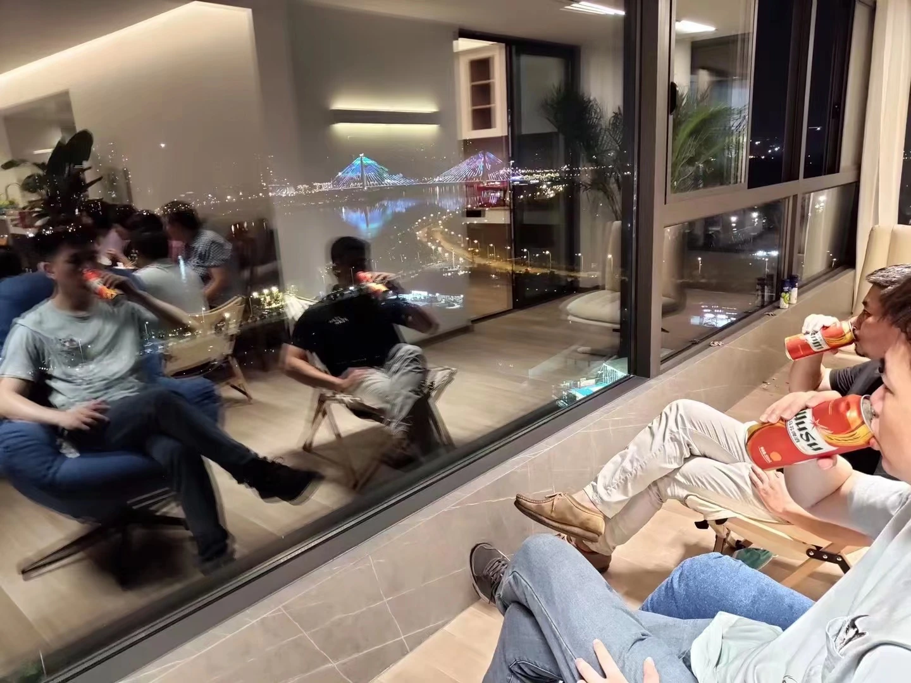
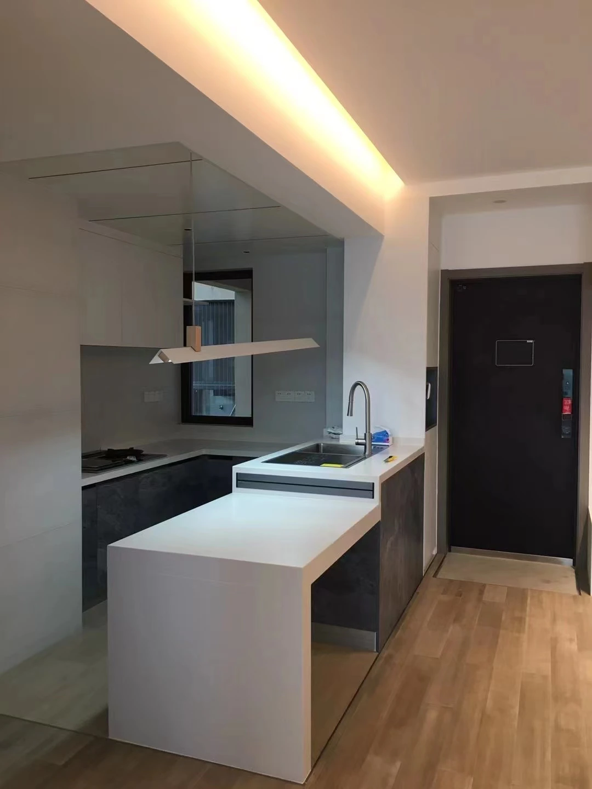
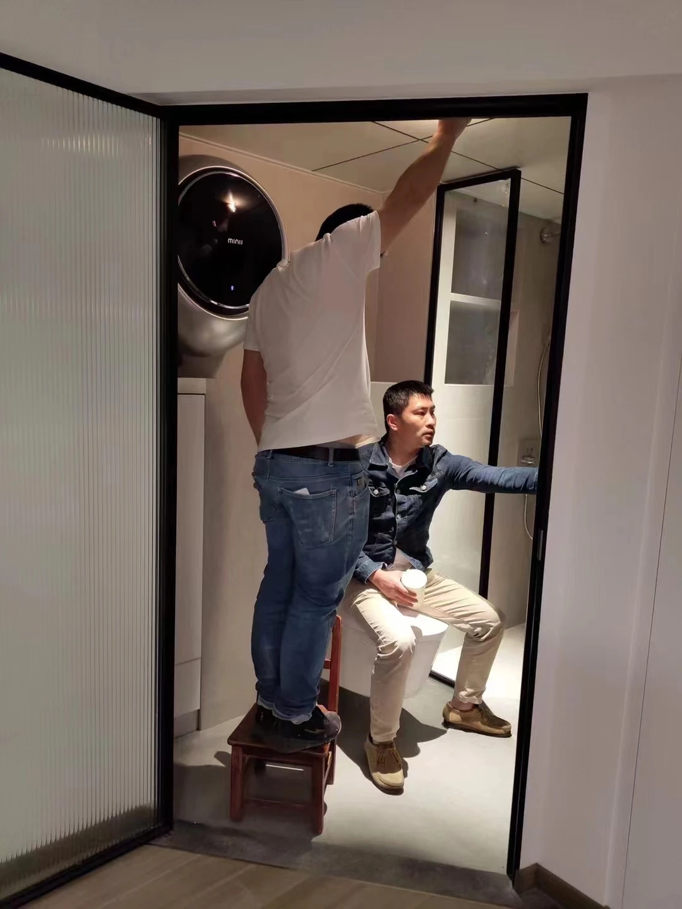
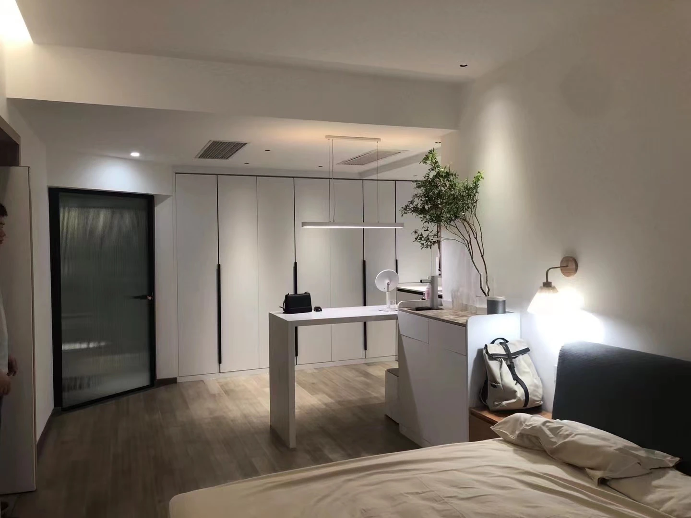
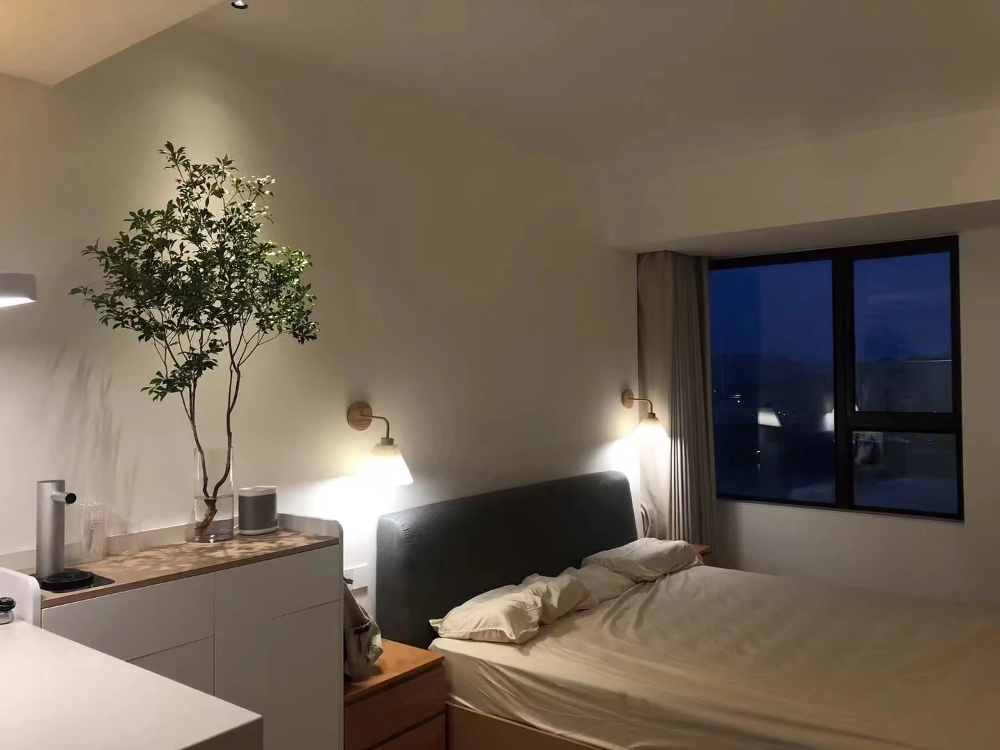

A HOME
AT DUSK
暮色中的家 Ngôi nhà lúc chạng vạng
这个住宅最完整的状态并不只存在于白天的完工照片中。 当轨道灯、灯槽与壁灯在傍晚逐层亮起，客厅、厨房、卧室与临窗区域形成不同强度的光场； 城市景观与家庭活动同时进入室内，使空间从“完成”转向真正被使用。
The residence is not defined only by its daytime completion. At dusk, track lighting, concealed light and wall lamps create different layers of illumination, allowing the city view and everyday activity to enter the interior together.
Ngôi nhà không chỉ được xác định bởi trạng thái hoàn thiện ban ngày. Khi đèn ray, ánh sáng hắt và đèn tường lần lượt bật lên lúc chạng vạng, cảnh quan đô thị và sinh hoạt gia đình cùng trở thành một phần của không gian.
THE VIEW EXTENDS
THE ROOM.
客厅以整墙收纳与电视界面压缩设备感，把主要视线留给端部的大窗。 浅色木地板、白色柜体与连续灯槽构成克制背景， 城市天际线则成为空间中最具变化的界面。


A COMPACT
DOMESTIC CORE.
厨房以白色岛台和灰色柜体形成清晰的工作核心。 从入口进入后，岛台首先组织转身、备餐与短暂停留； 玻璃界面保持空间通透，同时使厨房与其他生活区域之间仍有明确边界。
A white island and grey cabinetry form a compact domestic core. The island organizes arrival, preparation and brief pauses, while the glazed boundary preserves openness without removing spatial definition.
Đảo bếp trắng và hệ tủ xám tạo nên lõi sinh hoạt gọn gàng. Đảo bếp tổ chức chuyển động, chuẩn bị đồ ăn và những khoảng dừng ngắn, trong khi vách kính giữ sự thông thoáng nhưng vẫn xác lập ranh giới.
THE LAST
ADJUSTMENTS.
安装阶段的照片保留了空间真正完成前的最后动作。 门框、玻璃、设备和细部需要在现场不断校正； 这些并不显眼的调整，决定了使用时的顺畅程度。
The final stage is defined by small on-site corrections: frames, glazing, equipment and interfaces are adjusted until everyday use becomes effortless.
Giai đoạn cuối được tạo nên bởi những hiệu chỉnh nhỏ tại hiện trường: khung cửa, kính, thiết bị và các điểm tiếp giáp được điều chỉnh để việc sử dụng hằng ngày trở nên tự nhiên.

SOFT LIGHT,
FEWER BOUNDARIES.
卧室把睡眠、收纳与轻度工作放在同一连续空间中。 白色柜体、灰色床头和一株室内树构成主要层次； 夜色进入窗边后，壁灯和吊灯把照明收缩到更接近人的尺度。


A home changes after sunset.
Light reveals how people truly occupy it.
灯光让人的活动真正成为空间的一部分。
Ánh sáng cho thấy con người thực sự sống trong không gian như thế nào.